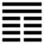

Phong Địa Quan (觀 guān)
Lâm là lớn, vật gì đến lúc lớn thì mới đáng biểu thị cho người ta thấy, cho nên sau quẻ Lâm tới quẻ Quán cũng đọc là Quan. Quán là biểu thị cho người ta thấy, Quan là xem xét
Thoán từ:
觀: 盥而不薦, 有孚顒若．
Quán: Quán nhi bất tiến, hữu phu ngung nhược.
Dịch: Biểu thị (làm mẫu mực cho người ta thấy) cũng như người chủ tế, lúc sắp tế, rửa tay (quán ) cho tinh khiết, bấy nhiêu cũng đủ rồi, không cần phải bày mâm cỗ dâng lên (tiến); mình chí thành (phu) như vậy thì người khác cũng chí thành tín ngưỡng (ngung) mình.
Giảng: Theo tượng quẻ, Tốn ở trên, Khôn ở dưới là gió thổi trên đất, tượng trưng cho sự cổ động khắp mọi loài, hoặc xem xét (quan) khắp mọi loài.
Lại thêm: hai hào dương ở trên, bốn hào âm ở dưới, là dương biểu thị (quán) cho âm; âm trông (quan) vào dương mà theo.
Đó là giải nghĩa tên quẻ.
Thoán từ và Thoán truyện đưa một thí dụ cho ta dễ hiểu.
Muốn biểu thị (quán) là mẫu mực cho người khác thấy thì nên có lòng chí thành như người chủ tế, lúc sắp tế, rửa tay cho tinh khiết, đó là điều quan trọng nhất, còn việc dâng cỗ, thuộc về vật chất, có nhiều cũng được, có ít cũng được, ví dụ như không có, chỉ dùng hương, hoa cũng tốt.
Hào 5 ở trong quẻ ở ngôi chí tôn, có đức dương cương, trung chính, chính là người cho thiên hạ trông vào mà cảm hóa theo.
Người đó nên coi đạo trời lẳng lặng vậy mà bốn mùa vận hành không sai, mà lấy lòng chí thành làm gương cho dân, dạy dân, dân sẽ không ai không phục.
Ý nghĩa các hào:
1
初六: 童觀, 小人无咎, 君子吝．
Sơ lục: Đồng quan, tiểu nhân vô cữu, quân tử lận.
Dịch: Hào 1, âm: Trẻ con nhìn lên (không hiểu gì), tiểu nhân thì không đáng trách, quân tử mà như vậy thì hối tiếc.
Giảng: Tên quẻ thì đọc là Quán, người trên (hào 5) biểu thị, làm gương cho người dưới. Nhưng xét từng hào thì đọc là quan, người dưới xem xét tư cách, hành vi của người trên. Hào 5, dương, đắc trung làm chủ quẻ, tượng trưng cho người trên, ông vua.
Hào nào cũng nhìn lên hào 5 cả, hào 1 ở xa quá, như con nít tò mò mà nhìn lên, không hiểu gì cả, nhưng vì là con nít, không đáng trách; người quân tử mà như vậy mới đáng trách.
2.
六二: 闚觀, 利女貞．
Lục nhị: Khuy quan, lợi nữ trinh.
Dịch: Hào 2, âm: Nhìn lên, chỉ thích hợp với nết trinh của đàn bà thôi.
Giảng: Hào này âm nhu, trung chính, là người con gái có nết trinh, ngó lên hào 5, không thấy được đạo lý của 5, con gái như vậy thì được. Người trượng phu mà như thế thì đáng xấu hổ (khả xú dã – Tiểu tượng truyện.)
3.
六三: 觀我生, 進退．
Lục tam: Quan ngã sinh, tiến thoái.
Dịch: Hào 3, âm: Xét bản thân, hành vi của mình, xem nên tiến lên (theo hào 4) hay nên đứng yên, đừng để phải lui xuống 2.
Giảng: Hào này bất chính (âm mà ở vị dương), lại ở trên cùng nội quái, có thể tiến hay thoái; Hào từ khuyên đừng ngó lên hào 5, cứ tự xét bản thân, hành vi của mình, nếu đối phó được với hoàn cảnh thì tiến lên, không thì thôi, như vậy là chưa sai đường lối.
4.
六四: 觀國之光, 利用 賓于王．
Lục tứ: Quan quốc chi quang, lợi dụng tân vu vương.
Dịch: Hào 4, âm: Xem cái quang vinh của nước mà lợi dụng địa vị thân cận với vua.
Giảng: Hào này âm, đắc chính, ở ngay dưới hào 5, tức là vị thân cận với vua (quí khách của vua) được vua tín nhiệm, xem xét đức sáng của vua (vua hiền thì nước mới vinh quang, nền vinh quang của nước tức là đức sáng của vua), mà bắt chước, đem tài sức ra giúp đời.
5.
九五: 觀我生君子, 无咎．
Cửu ngũ: Quan ngã sinh quân tử, vô cữu.
Dịch: Hào 5, dương: Xét bản thân, hành động của ta hợp với đạo quân tử, như vậy là không có lỗi.
Cũng có thể chấm câu như vầy: Quan ngã sinh, quân tử vô cữu; và dịch là người quân tử ở đời này phải xem bản thân, hành động của ta (tức hào 5) mà noi theo thì không có lỗi.
Giảng: Hào 5 ngôi chí tôn, cương cường mà trung chính là bậc quân tử làm gương cho 4 hào ở dưới, mọi người đều ngó vào.
Tiểu tượng truyện bàn rộng: “Quan ngã sinh, quan dân dã” nghĩa là muốn xem đức của ta (của vua) thì cứ xem phong tục đạo đức của dân”, vì vua mà hiền minh thì dân tình tốt, vua u mê thì dân tình xấu.
6.
上九: 觀其生君子, 无咎．
Thượng cửu: Quan kỳ sinh quân tử, vô cữu.
Dịch: hào trên cùng, dương: xét bản thân, hành động của hào này hợp với đạo quân tử, như vậy là không có lỗi.
Cũng có thể chấm câu như vầy: quan kỳ sinh, quân tử vô cữu; và dịch là : người quân tử ở đời này phải xem bản thân, hành động của nó (của hào cuối cùng) mà noi theo thì không có lỗi.
Giảng: Hào từ: hào này y như hào từ 5, chỉ khác hào 5 dùng chữ ngã là ta, mà hào này dùng chữ kỳ là của nó (của hào trên cùng. Là vì hào 5 là vua, nói với hào 4 là cận thần, tự xưng là ta; còn hào này là lời Chu Công nói về hào trên cùng, cũng như đã nói về các hào 1, 2, 3, 5 ở dưới.
Hào trên cùng này cũng là dương như hào 5, cũng là quân tử, tuy không phải ở ngôi chí tôn, nhưng ở trên cao hơn hết, cũng làm gương cho các hào âm trông vào. Vì nó có tư cách quân tử, nên không có lỗi.
*
Quẻ Quán này khuyên người trên nêu gương cho dưới và người dưới noi gương người trên; nhưng trẻ con và tiểu nhân thì nhiều khi chưa biết noi gương.